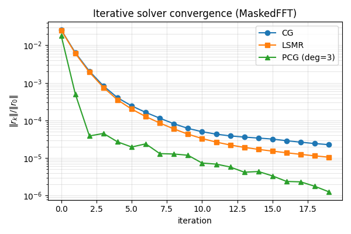
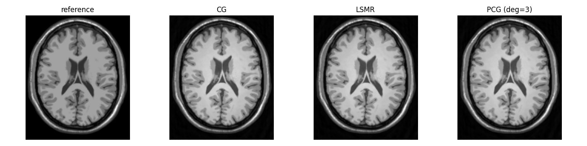

Note
Go to the end to download the full example code.
Iterative Solve: CG, LSMR, and Polynomial Preconditioning#
This example demonstrates the solve() method exposed on every
PyGROG operator (SparseFFT, MaskedFFT and their
pygrog.gadgets decorators), and the
pygrog.PolynomialPreconditioner accelerator.
The pipeline mirrors Basic Usage: mri-nufft Baseline vs PyGROG:
Simulate non-Cartesian k-space from a BrainWeb phantom.
GROG-grid into Cartesian space (sparse and dense paths).
Solve the regularised least-squares problem
\[\hat x \;=\; \arg\min_x \; \| A x - b \|_2^2 + \lambda^2 \| x \|_2^2\]using
pygrog.cg(),pygrog.lsmr(), and a polynomial- preconditionedpygrog.cg().
import matplotlib.pyplot as plt
import numpy as np
import torch
from brainweb_dl import get_mri
from mrinufft import get_operator, initialize_2D_spiral
from mrinufft.density import voronoi
from pygrog import PolynomialPreconditioner
from pygrog.calib import GrogInterpolator
from pygrog.operator import MaskedFFT, SparseFFT
def _synthetic_smaps(shape, n_coils=4):
ny, nx = shape
yy, xx = np.mgrid[-1 : 1 : ny * 1j, -1 : 1 : nx * 1j]
smaps = []
for angle in np.linspace(0.0, 2.0 * np.pi, n_coils, endpoint=False):
cx, cy = np.cos(angle), np.sin(angle)
gauss = np.exp(-((xx - cx) ** 2 + (yy - cy) ** 2) / (2.0 * 0.45**2))
phase = np.exp(1j * (cx * xx + cy * yy))
smaps.append(gauss * phase)
smaps = np.asarray(smaps, dtype=np.complex64)
smaps /= np.sqrt((np.abs(smaps) ** 2).sum(0, keepdims=True)) + 1e-12
return smaps
Phantom + spiral trajectory#
image = get_mri(0, "T1")
image = np.flip(image, axis=(0, 2))[90].astype(np.float32)
image /= image.max() + 1e-8
shape = image.shape
n_coils = 16
samples = initialize_2D_spiral(Nc=48, Ns=600, nb_revolutions=10).astype(np.float32)
density = voronoi(samples)
smaps = _synthetic_smaps(shape, n_coils=n_coils)
Simulate non-Cartesian k-space#
/home/mcencini/.conda/envs/pygrog/lib/python3.13/site-packages/mrinufft/_utils.py:67: UserWarning: Samples will be rescaled to [-pi, pi), assuming they were in [-0.5, 0.5)
warnings.warn(
k-space shape: (16, 28800)
GROG calibration + grid#
calib = nufft.adj_op(kspace_nc) # quick low-res-ish phantom estimate
calib = np.asarray(calib).astype(np.complex64)[None] # (1, *shape)
grog = GrogInterpolator(
shape=shape,
coords=samples.reshape(48, 600, 2),
kernel_width=2,
oversamp=2.0,
image_shape=shape,
)
calib_full = np.asarray(smaps) * np.asarray(image).astype(
np.complex64
) # (n_coils, *shape) — ground-truth coil images
grog.calc_interp_table(calib_full, lamda=0.01, precision=1)
kspace_nc_shaped = np.asarray(kspace_nc).reshape(n_coils, 48, 600)
# Sparse path
sparse = grog.interpolate(kspace_nc_shaped, ret_image=False)
sparse_t = torch.as_tensor(np.asarray(sparse))
op_sp = SparseFFT(plan=grog.plan, smaps=torch.as_tensor(smaps))
b_sp = sparse_t * torch.as_tensor(grog.plan.pre_weights)
b_sp = b_sp.reshape(*b_sp.shape[:-1], *op_sp.natural_shape)
# Dense/grid path
kgrid, mplan = grog.interpolate(kspace_nc_shaped, grid=True)
op_m = MaskedFFT(plan=mplan, smaps=torch.as_tensor(smaps))
b_m = torch.as_tensor(np.asarray(kgrid))
Solve via pygrog.cg() (default for Toeplitz-enabled operators)#
op.solve(b) dispatches to CG (on the normal equations
\(A^H A x = A^H b\)) when Toeplitz is on, otherwise to LSMR.
For PyGROG operators on CPU, Toeplitz is auto-enabled.
residuals_cg = []
def _cb_cg(k, x, rel):
residuals_cg.append(rel)
img_cg = op_m.solve(
b_m,
method="cg",
max_iter=20,
damp=1e-3,
callback=_cb_cg,
)
residuals_lsmr = []
def _cb_lsmr(k, x, rel):
residuals_lsmr.append(rel)
img_lsmr = op_m.solve(
b_m,
method="lsmr",
max_iter=20,
callback=_cb_lsmr,
)
Polynomial preconditioner — accelerates CG#
pygrog.PolynomialPreconditioner builds an approximate inverse
\(P(A^H A) \\approx (A^H A)^{-1}\) from a degree-d polynomial
whose coefficients minimise \(\\|1 - x p(x)\\|_2^2\) over the
operator’s spectrum. Each application costs d evaluations of
A^H A plus d AXPYs and is usually amortised by the lower CG
iteration count.
pc = PolynomialPreconditioner(op_m, degree=3, n_power_iter=10)
print(f"Preconditioner spectrum estimate: {pc.spectrum}")
print(f"Polynomial coefficients: {pc.coeffs}")
residuals_pcg = []
def _cb_pcg(k, x, rel):
residuals_pcg.append(rel)
img_pcg = op_m.solve(
b_m,
method="cg",
max_iter=20,
damp=1e-3,
preconditioner=pc,
callback=_cb_pcg,
)
Preconditioner spectrum estimate: (0.0, 1.031614002585411)
Polynomial coefficients: [11.632257772694174, -39.46524775970829, 51.00777055603248, -22.25008258194248]
Compare convergence#
fig, ax = plt.subplots(figsize=(6, 4))
ax.semilogy(residuals_cg, "-o", label="CG")
ax.semilogy(residuals_lsmr, "-s", label="LSMR")
ax.semilogy(residuals_pcg, "-^", label=f"PCG (deg={pc.degree})")
ax.set_xlabel("iteration")
ax.set_ylabel(r"$\|r_k\| / \|r_0\|$")
ax.set_title("Iterative solver convergence (MaskedFFT)")
ax.grid(True, which="both", alpha=0.3)
ax.legend()
plt.tight_layout()
plt.show()

Visualise the reconstructions#
fig, axes = plt.subplots(1, 4, figsize=(14, 3.5))
ref = image / (image.max() + 1e-12)
for ax, im, title in zip(
axes,
[
ref,
img_cg.abs().cpu().numpy(),
img_lsmr.abs().cpu().numpy(),
img_pcg.abs().cpu().numpy(),
],
["reference", "CG", "LSMR", f"PCG (deg={pc.degree})"],
strict=False,
):
arr = im / (im.max() + 1e-12)
ax.imshow(arr, cmap="gray", origin="lower")
ax.set_title(title)
ax.axis("off")
plt.tight_layout()
plt.show()

The same solve() API works on the sparse path#
img_cg_sp = op_sp.solve(b_sp, method="cg", max_iter=20, damp=1e-3)
print(
"SparseFFT solve image shape:",
tuple(img_cg_sp.shape),
)
SparseFFT solve image shape: (217, 181)
Total running time of the script: (0 minutes 13.105 seconds)